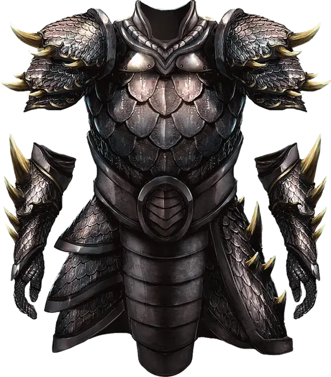

Доспех из драконьей чешуи
Dragon Scale Mail
Доспех (Чешуйчатый доспех), очень редкий (требуется настройка)

Рекомендованная стоимость 40 000 ЗМ
Доспех из драконьей чешуи изготовляется из чешуи одного вида драконов. Иногда сами драконы собирают свои отторгнутые чешуйки и дарят их, иногда охотники убивают дракона и тщательно сохраняют шкуру. В любом случае доспех из драконьей чешуи высоко ценится.
Пока вы носите этот доспех, вы обладаете бонусом +1 к Классу Защиты, Сопротивлением одному типу урона, соответствующему тому виду дракона, из чьей чешуи был создан доспех (см. таблицу ниже), а также совершаете с Преимуществом спасброски от дыхательных атак Драконов.
Кроме того, действием Магия вы можете сосредоточить свои чувства и определить расстояние и направление к ближайшему дракона того же вида, что и доспех, если в пределах 30 миль от вас находится такой дракон. Это действие нельзя использовать повторно до следующего рассвета.
| Дракон | Сопротивление |
| Белый | Холод |
| Бронзовый | Молния |
| Зелёный | Яд |
| Золотой | Огонь |
| Красный | Огонь |
| Латунный | Огонь |
| Медный | Кислота |
| Серебряный | Холод |
| Синий | Молния |
| Чёрный | Кислота |